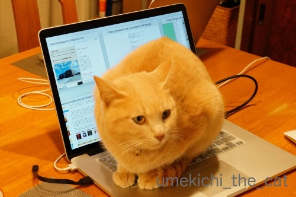

肉球の魔術師と錦卵 [梅吉]

Macジーニアスの梅吉さんです。
肉球でMacを操作しますよ。キリッ

梅吉さん？後ろに見えている画面が見慣れないものになっていますが
通常の画面に戻すにはどうすれば良いのでしょうか？？もしもーし？？？

おっとがノートPCの画面を立てっぱなしで離れるとすかさずキーボードの上に乗る梅吉。
（私は画面を倒してから離れるので被害はありません＾＾）
先日は華麗な肉球キーボード操作でこんなソースを表示してくれました (＠◇＠)
なんだ？この画面。
不思議な画面の他にはアクセシビリティのボイスオーバー（画面読み上げ機能です）を立ち上げ
ズーム機能で画面を拡大したりしてくれます。
老後のおとーさんを心配して早めに備えよう！との事なのでしょうかw

FBへの投稿も大好きですよ！
梅吉の足元にコメントがチラッと見えていますが・・・・

おお！「wwwwwww」との書き込み！
「梅吉、おとーさんのFBみてワロタ？」「誰かのコメントに草生えた？」
と笑っていたのですが・・・
以下ちょっと尾籠なお話。
このちょっと前に梅吉はうんPをなさっていたのです。
ちょっと手が離せなくてうんP後のおちりのチェックを怠っていたら
おちりから未消化の猫草が数本飛び出たままになっておりました(⌒_⌒;
梅吉としては「わしのおちりから草（www）」と現状＆惨状を伝えたかったのかもしれませんが
下僕二人はまったく気付かずに笑っていたという出来事でございました。
Macジーニアス梅吉はキーボードの操作もコメントも
メッセージ性に富んでいるようです(*>艸<)
梅吉のおちりから飛び出た草はちゃんと引っ張って取りましたよ。
その後、おとーさんはキーボードの上のお掃除をしてました(*>艸<)

はい！！申し訳ありませんでした。
補足：皆さんご存知かと思いますが念のために。
ネット用語で笑う事を「w」で表現しますよね。
この「www」が「草が生えている」ように見えるため
「○○で笑った（ワロタ）」を「○○で草」とネットの世界では表現します。
お節介な解説でしたー。
我が家のお正月の食卓。
お雑煮はごぼう、にんじん、だいこん、たけのこ、レンコン、鶏肉、干し椎茸をお醤油仕立てで。
里芋は最近入れるようになりました。（ちなみに北海道で里芋は採れません）
三つ葉、生麩、柚子皮をあしらってあります。
関西に住んでからは丸もちを買う年もありますが基本角もちです。
材料は各家庭で若干違いはあると思いますがこれがごく一般的な北海道のお雑煮でしょうか。
関西では京都は白味噌仕立てだろうなと想像できますが
大阪、和歌山、滋賀、兵庫でもそれぞれ違う気がします。
お澄ましのところもあるようですが一般家庭のお雑煮をいただく機会がないので
細かいことはわかりません。
和歌山では味噌仕立てのお雑煮のおもちを取り出してきな粉にまぶして食べる
と最近SNSで目にした衝撃も。
で、本題はお雑煮の上の方、伊達巻の隣に写っている黄色い渦巻き状のもの・・・・
これです。「錦卵（にしきたまご）」と言います。
一年に一度お正月のお楽しみ。私はこれが大好きなんですが関西ではなかなか売っていないのです。
どういう食べ物かをざっくり言うと、茹でた卵を白身部分と黄身部分に分け
それぞれを裏ごしして砂糖を加えて渦巻き状、あるいは市松模様に形成して蒸したもの、です。
こういう雅やかなお正月料理は関西発祥っぽいなぁと思っていたのですがそうでもなさそう。
北海道ではお正月用品として普通にかまぼこなどと並んでスーパーで売っていました。
一本1000円前後。
では、北海道では一般的なおせち料理かと言うとそうでもないのです。
父方、母方どちらの親戚の家でも食べたことはありません。
私は結婚しておっとの実家でおせちをいただくまで知りませんでした。
初めて食べた時は「こんな美味しいものがあるなんて！」と驚きでしたよw
大阪ではスーパーでは見つけられないので
お正月が来るたび成城石井で桐の箱に入った大変お高いのを買ったり
大丸デパートの地下でこれまたお高いのを一年に一度だから・・・と買っているのですが・・・。
（どちらも普通の板蒲鉾くらいの大きさで3000円くらいします。）
で、皆様は錦卵を召し上がったことがありますか？
普通にスーパーで手に入っていますか？
地域性のあるおせち料理だとしたらどの地方で一般的に食べられているのでしょうか。
ネットで調べてみましたが良くわかりません。
何かご存知の方がいらっしゃいましたら教えてくださいませm(_ _)m

カフェオレ色の梅吉

梅吉 2023年8月10日 永眠


梅吉と出会った譲渡会

犬猫の理由なき殺処分ゼロ
妄想広告
UMEKICHI 光

爆発的に早い！
時々攻撃的！
Thanks to Mr.Boss365
爆発的に早い！
時々攻撃的！
Thanks to Mr.Boss365

ええっ、まさかそのオチリでキーボードの上に・・・？^^;
「・・・で草」初めて知りました(｡-_-｡)（「ww」はギリギリ分かります）
そうか、草のことをネット用語で伝えるとは、さすが梅さま。
わたしのはデスクトップですが、やはりわざわざキーボードに乗ってきます。
雑煮、おいしそう♪
我が家は鶏肉醤油仕立ての丸餅です。（でも出汁は鶏じゃない）
塩系なのにあんこ入ってるとかきな粉つけるとか、、わたしには罰ゲームです。
でも、好きな人にはたまらんのでしょうね。
錦卵、確かに関西っぽいですね。
by Ja-Kou66 (2019-01-07 00:39)
梅吉さん何か難しいものを読んでいますね。キーボードを正しく打てることも判明しました。
錦卵は生協のお正月カタログに必ず何種類か載ってます。買ったことなかったのですが今度試してみようかしら。
by zombiekong (2019-01-07 02:23)
私も時々意味不明の文章を打たれます＾＾；
お雑煮は味付けや餅の形など地域ごとに違ってて面白いですね。
by ぽちの輔 (2019-01-07 06:39)
錦卵、まったく知りませんでしたー(^_^;)
地域によって色々なんですね。
そして実家のお雑煮は、初日からなぜか澄まし汁。。。
by よーちゃん (2019-01-07 06:41)
きーぼとの凹凸が気持ちいいのかにゃあ^^
by ニコニコファイト (2019-01-07 06:46)
梅吉さん！キーボードの達人とは♪
しかも画面を見ずに（笑
おちりから草・・・
我が家はよくヒモが出て来てました(;^_^A
錦卵！！知りませんでした！！
我が家の方のスーパーでは置いてません！！
食べてみたいです(#^.^#)
by きぃ (2019-01-07 07:44)
梅吉さんもキーボード好きなんですねぇ♪( ´▽｀)
そして絶妙な肉球さばきでコメントも入れちゃうなんて天才*\(^o^)/*
うちのノエルもかみさんのキーボード（私のには乗らないw）が
大好きで、ちょっと目を離した隙に乗っかっては
かみさんに「ノエちゃん、何をしてくれちゃってんのかな？」って
構ってもらえて嬉しそうにゴロゴロ言ってます(⌒-⌒; )
「草」私は知りませんでしたが、かみさんは知ってました(°_°)
うちのかみさんってば、妙なことを知ってるんですよねぇ(*_*)
by ニッキー (2019-01-07 08:02)
あ、この黄色と白の卵！
小さい頃、お正月に食べていたわ！錦卵って言うんだね。
一人暮らし始めてからは、こういうものは食べてなかったし
たしかに東京でも見かけないかな。（お正月の食材コーナーを見ないからかもしれないけど）存在を忘れていたよ。
wwwの草、最近知りました(笑)
漫画のアプリを見たときに、コメント欄で「草」「草」書かれていて、なんだこりゃって思って検索しちゃったのよｗｗ
このサイト、どんなふうになってるんだ？ってときに、わたしはソース画面開いちゃいます(笑)
梅吉くんも気になったんだよね^^ それにしてもボイスオーバーや画面拡大など、梅吉くんはお父さんに優しいね^^
うちもそれやらかしてくれて、元に戻すのが分からずなんど検索して調べたことか(笑)
by リュカ (2019-01-07 08:26)
のどかな良いお正月を過ごされたようですね。
ちぃさん家のお雑煮、美味しそうです。
我が家の雑煮は鶏肉、水菜、紅白蒲鉾、椎茸で醤油仕立てでシンプルです。
お餅は丸餅と角餅、その年によります。
今年は角餅でした。
夫の食べ方によって両方の時もありますが、
年々消費量は減ってきてます（笑）
錦卵は知りませんでした。
似たような伊達巻はポピュラーにあります。
随分昔にTVの正月料理を作る番組で
黄身を裏ごししてというのを観た事がありました。
アレだなって思いました。
来年は探してみようと思いました。
ところで、梅吉さんは神妙な顔をして、PCを操作しながら、
猫草さんがついてたのですね（笑）
ついているから操作していたのか？（笑）
そう思って読み返すと、訴えてるな、
静かに抗議しているなと思ってしまいますね（笑）
キーボード操作で訴えるとはMacジーニアス梅吉さんは一味違います。
そのお尻でキーボードww
wwを草は前に目にしました。
ワロタも知っていました。
私の場合は楽しいときに笑ってしまうので使っていますが、
時々そういう使い方で良いのかと思う時があります（失礼じゃないかと）
ワロタも草も私の感覚とは違うなと思いながら使ってます（楽）では変だし。
by kiki (2019-01-07 09:06)
梅吉さん、PCの上だと少し暖かいのでしょうか？
錦卵は東京だとあまり見かけません。
伊達巻きが殆どです(^^)
by ma2ma2 (2019-01-07 09:42)
「○○で草」解説ありがとうございます。
チャット用語かなぁとは想像していました。
さて錦卵ですが、初めて見ましたし、売っているところも見たことはありません。
製造に手間がかかることが予想されるのでお高いのでしょうね。
お正月になると普段は200円くらいの蒲鉾も1000円くらいになってますし(笑
北海道も角餅なのですね！そして具が多い♪
お雑煮、私は今でも東京風しか作れません。大根と人参と鶏肉と三つ葉の
澄まし汁にお餅を入れるタイプです。
兵庫県も味噌仕立てのお雑煮の地域もあるようです。私は作れませんが(笑
あと四国では餡餅を入れるお雑煮もあるそうです。
by marimo (2019-01-07 10:52)
おはようございます。
ジーニアス・天才梅吉君！！やりますね！！
肉球でのソース分析？プログラミングしています。推測ですが「C言語」ですね。
うんPには、気を付けたいです。
小生も知らないで、股入れ抱っこした時に草（www）？の時あります。
「わしのおちりから草（www）」はウンチクのあるタイピンングです。
「錦卵」手が込んでいて美味しそうです。
ネットで検索すると上下二段タイプもあるみたいですが、食べた記憶ないです。
錦糸卵？は「ちらし寿司」「冷やし中華」でよく食べます？関係ないですね・・・。
３０００円は高価ですが、正月のお祝いの席では晴れやかで良いですね！？(=^･ｪ･^=)
by Boss365 (2019-01-07 11:43)
梅吉さん、草の出たままのオチリでキーボードに？！ (≧▽≦)
そのうち「ハヤクオチリフイテ」と入力しちゃうかもしれませんね^^;
ウチのも何か要求があるときは執拗に絡んできます。
構わず用事をしているとめちゃくちゃグレて、それがまた面白くてわざと知らん顔しちゃいます(#^^#)
お雑煮美味しそうですね♪
実家は関西なのにおすましに焼いた丸餅、青もの、蒲鉾だけのシンプルなものでした。
錦卵は初めてみました。ずいぶん手が込んでますね！
煮物でどうしても茶色くなるおせちに卵の黄色が鮮やかです^^
by ゆきち (2019-01-07 13:02)
私の母は（富山県）渦巻き状ではなく、
上が黄色、下が白の、2段の長方形型で作っていました。
味付けと、裏ごしして蒸す・・・は同じですね。
by angie17 (2019-01-07 18:39)
キーボード、ちょっと大変な事になったんですね(^_^;)
さすが梅吉さんです！
今年は友人がホテルに勤務しているので付き合いで初めておせちを買いましたが、その中に錦卵がありました。
記憶が無いので多分初めて食べたと思いますが、スーパーでは見たことがありません。
by kou (2019-01-07 19:07)
梅吉さん、ボイスオーバーに拡大とは、なかなか機能を活用してる？
しかし‥草草草！と主張したかったんでしょうか？＾＾；
錦卵って全然知りません～お高く売っているということは、由緒ある食べ物なのかしら。
お雑煮、栄養満点ですねー！
うちは、母の実家風の大根千切りがメインのお雑煮が元旦で、関東風の小松菜に鶏肉、ナルトか小さなかまぼこ入のを2日に食べておりました。お餅は四角です＾＾
by sana (2019-01-07 19:57)
梅吉さんの肉球で出したのはブログ記事のソースファイルですね。
HTML言語です。
大昔、ホームページを手入力で作っていたのを思い出します。
黄色い食べ物は初めて見ました＾＾
by riverwalk (2019-01-07 20:11)
ノートPCのキーボードってほのかに温かいから
おちりを乾かしにきたのでしょうか。^^;
錦卵は知りませんでした。
お雑煮は「味噌仕立て」派です。
実家がそうだからなのですが、子供の頃
ブシカツオをかけてゆらゆらするのを見ながら
食べるのが好きでした。^^)
ちなみに味噌は、フツーに合わせ味噌でした。
by yes_hama (2019-01-07 22:06)
ぃゃ、ただ単にPCの上は暖かいからそこに居るのでは（ﾟ□ﾟ）
by 英ちゃん (2019-01-08 00:07)
キーボードの上、座り心地が良いのでしょうか？
ほんのり温かい？？
ジーニアス梅吉、素敵なネーミング♪ (///∇///)♪
by あとりえＳＡＫＡＮＡ (2019-01-08 13:29)
二層にして作るのは、金と銀を表しているらしいですね。
錦卵は、四角くて二層に重ねたものは懐石料理でよく見かけますが、このように巻いたものは、紀文や築地入船などの蒲鉾屋さんで出してる以外は見かけたことないですね。どこの地方でしょう。
似た感じの料理に、岩石卵というのがあって、白身は裏ごしせずに細切れにして味付けした黄身の中に混ぜ込んで巻いて蒸すのですが、これも美味しいんです。伊達巻の代わりに作ったことがあります。
by nachic (2019-01-09 13:12)
おちりから猫草…＾＾くすっと笑っちゃいました。
梅吉さんは、気持ち悪くって笑いごとじゃないよね。
ごめんね。とれて良かった(´▽｀) ホッ
でも、Macの達人なんて、カッコイイよ～( ´∀｀ )
by マーヤ (2019-01-09 18:46)
Ja-Kou66さん＞
ヤングな梅吉はデジタル世代ですからー。
ネットやPCのことは私より詳しいかもしれませんw
お雑煮、我が家も出汁は鰹節と昆布の合わせ出汁です。
関東の方は角もちだと思っていましたが丸もちなのですね！
今の時代は地域差というよりも
ご先祖様の出身地がキィになるのかもしれませんね。
錦卵、ご存知ありませんでしたか・・・
食通のJa-Kou66さんはもしや・・と思ってました。
zombiekongさん＞
梅吉ったらいつのまにこんな難しい知識を仕入れたのでしょうね(*>艸<)
デジタル世代の子はやっぱり一味違うのかしら・・・
なんとー！生協、私も個配してもらってますが
大阪の生協のカタログで錦卵は見たことありません。
何種類もあるんなんて、羨ましいです。
大都会はいろんな地方の出身者の方がいるので需要があるんでしょうね。
お料理というよりお菓子みたいなものなので甘いもの
お嫌いじゃなければぜひ召し上がってみてください＾＾
ぽちの輔さん＞
大所帯のポチの輔さんちで入れ替わり立ち替わりキーボードの上に乗られたら
PCが変になっちゃいそうです(*>艸<)
地域それぞれのお雑煮文化はずーっと生き続けて欲しいなって思います。
お雑煮食べない家庭もあるみたいだから心配です。
よーちゃん＞
錦卵、奈良の方もご存知ないですか・・・
一体どこの誰が食べているのーって感じです（笑）
お雑煮はすまし汁なんですね！
ん？すまし汁じゃない時もあるのかしら。
ニコニコファイトさん＞
キーボードの上にシリコーン製のカバーをしているので
その感触が好きなのかも、です＾＾
そういえばシリコーン好きなのにかじったりはしてませんね・・・
きぃさん＞
そう！画面を見ていないのですよ！
逆ブラインドタッチ？(*>艸<)
おちりからヒモとはそれまた大変なことが・・・
詰まっちゃわなくて良かったです！
錦卵、私が成城石井で買ったものは「築地 ○○」と書いてありました。
（○○は忘れちゃったけど多分出汁巻卵専門店かなぁ）
なので今は豊洲に行くと手に入ると思いまーす＾＾
ってそこまでしないですよね(｡-_-｡)
ニッキーさん＞
キーボードに乗るのはノエルさんなんですね！
ニッキー家の重量級の方が乗ると
本気でPCが壊れちゃいそうなので安心しましたw
ニッキーさんは絶対「草」をご存知だと思ってたので意外です！
最近は本や映画のレビューでも「草」って普通に書いている方がいるので
ゴッドマザー様はそちら方面からの知識かなって思いました＾＾
リュカさん＞
錦卵、食べた事のある人はっけ〜ん！
北海道だと堀川と紀文のが売っていたのよ。
甘いものなのでリュカさんの記憶から姿を消していたのね、きっと。
なんと！
リュカさんはソース画面を開いて分かっちゃう人なのね。
私はテンプレートのレイアウトにもう少し手を入れたいなと
分かる範囲でいじってみようとしたけど
全然歯が立たなくて挫折しましたw
ま、今のシンプルなデザインも気に入ってるのでOKなんだけど(≧▽≦)
梅吉にちょされた（笑）画面、おっとも「どうやってなおすんだよー！」と
ぼやいてますわwww
kikiさん＞
今年は本当にのどかなのんびりお正月でした。
ちょっと寒かったけどお天気も崩れずにいてくれたし＾＾
以前コメントいただいた体重問題・・・
まだ体重計に乗ってませーん(⌒_⌒;
自分の感覚としては変わってないかなって思ってます（そう願うw）
自分で書いてて北海道のお雑煮は具沢山だなって思いました。
ザッツ「雑」煮(≧▽≦)
角が立たないように「丸もち」とは聞いてましたが
大根も人参もまあるく切れるように細いものが売っているのは
大阪に住んで初めて知ったことです。
私のは何もかも細切りで角立ちまくりでーす(*>艸<)
錦卵、ご存知でいらっしゃいましたか！
裏ごしのアレ、ネットでは意外と簡単とレシピが出てるんですが
工程を読んで「高くてもいいから買おう・・・」と思いましたw
甘くてお菓子みたいなのできっとスイーツ好きのkikiさん一家には
好評なんじゃないかなって思います！
「ワロタ」「草」・・・ふふふヾ(*ΦωΦ)ﾉ
漫画に造詣の深いkikiさんはきっとご存知だろうと思ってました(≧▽≦)
ma2ma2さん＞
確かに！キーボードの上はほんのりあったかいですよね＾＾
錦卵、見かけませんか・・・
大阪でも伊達巻は何種類も置いていあるのに錦卵は見かけませんw
(ちなみに私は伊達巻があまり好きではありません(^_^;)
marimoさん＞
あ！marimoさんのご出身は関東なのですね！！
関西っ子なのかなぁ・・・と思っていました＾＾
みなさんのお雑煮を伺っていると
北海道は具沢山だなーってつくづく思いました。
豪快&栄養満点なんですけど雅やかな特別感が少ないですねwww
四国の餡餅入り雑煮は聞いたことがありますよー。
甘いものの後はしょっぱいものー、と合理的とも言えますなぁ・・・
錦卵は知られざるお正月料理の色が濃くなってきました。
甘くて美味しいのに。
伊達巻、栗きんとん、私はあまり好きじゃないのですが
これは特別です＾＾
Boss365さん＞
PCに関しては私よりも断然梅吉ですね＾＾
梅吉がおっとに謎かけして「なおせるかにゃ？」と
腕比べをしているようにも感じますw
うんP後だけにウンチクのあるタイピング（爆）
梅吉もBoss365さんもやりますねー(*>艸<)
錦卵はご存知ありませんでしたか・・・
成城石井で買ったものは「築地 ○○」と買いてあったので
（○○は忘れちゃったw)
関東の方ならご存知かなと思ったのですが。
錦糸卵は自分で作れますが錦卵は無理www
by ちぃ (2019-01-09 20:42)
ゆきちさん＞
本当に！「ハヤク・・・」と入力して
さらにボイスオーバーで読み上げもしちゃうかもしれませんw
そうなると下僕への不満も延々と入力されちゃいそうで怖いです(^_^;)
関西ではおすましお雑煮も多いようですね＾＾
シンプルなお雑煮はお上品で雅やかな感じがします。
北海道のは大雑把で「らしい」なぁって感じがします(*>艸<)
錦卵、赤いもの、茶色いものが多いおせちの中での鮮やかな黄色は
アクセントにもなって良い感じです。
ゆきちさんがご存知ないということは
大阪ではおせちに使わないのですね。
今年は商店街で棒鱈の煮たのを初めて買ってみました＾＾
鯛の子の煮たのは来年チャレンジしてみまーす。
（食べたことありません）
angie17さん＞
手作り派！素晴らしいです！！
ネットで検索すると（二段の長方形ありますね＾＾）
レシピが出ているのですが手間を見て「無理w」と早々に断念しました。
ご実家が富山県とのこと。
おっとの母親も富山出身なので北陸でよく食べられている？？
kouさん＞
おっとのキーボード、年末に運が付いたようですwww
ホテルメイドのおせちに錦卵が！？
鮮やかな黄色、おせちの中で映えていたでしょうね＾＾
でもスーパーでは売っていないのですね・・・
sanaさん＞
梅吉、私が知らないような機能をどんどん立ち上げてくれますよw
Macに読み上げ機能がついているなんて梅吉が立ち上げるまで知りませんでした(^_^;)
北海道のお雑煮はあるものなんでも入れるみたいで
豪快というかちょっとごった煮みたいなんですが・・・
でもいろんな食材からお出汁が出て美味しいのですよ＾＾
関東風のお雑煮には小松菜が！これは初めて知りました。
錦卵はご存知ありませんでしたか・・・
riverwalkさん＞
梅吉はHTML言語を操るのでしょうか！
そうそう！ブログが登場するまでは
みなさんご自分でホームページを作っていましたよね。
ホームページビルダーなるソフトもあったような・・・
私にはちんぷんかんぷんだったのでホームページは諦めてましたけどw
黄色い食べ物（笑）このほか市松模様や二層の2段重ねなどもあるようです。
yes_hamaさん＞
PCをウォシュレットについているおちり乾燥機使い、ですね(≧▽≦)
あるいはおちり床暖房・・・どちらにしても間違ってはいない使い方ですねw
合わせ味噌仕立てのお雑煮を召し上がるところも！
yes_hamaさんのところはどちらかといったら八丁味噌文化かな？
と思っていました。
そしてブシカツオをかけて召し上がるのですね。これも初耳です。
情報ありがとうございましたー＾＾
英ちゃんさん＞
うふふふ・・・まあそれが真実ですね(*>艸<)
でも深読みしたくなる「www」でした。
あとりえSAKANAさん＞
ほんのり暖かく座り心地もよくおとーさんの香りもする、かも(*>艸<)
ジーニアス梅吉、ちょっとシリコンバレー風でしょうか(〃▽〃)
nachicさん＞
流石にお詳しい！
以前成城石井で買った錦卵は「築地 ○○」と書いてあったのですが
（覚えてない。メモってもいない。）
おそらく入舟さんのだったのでしょうね。
北海道のスーパーで売っていたのは紀文と堀川というメーカのもの。
どちらも渦巻き模様でした。
二層に重ねたものは懐石料理で用いられることがあるのですね。
こんど食事に行ってカウンターに座ることがあったら
料理人の方に色々聞いてみようかしら・・・
岩石卵はググってみました。これも華やかでお正月らしいですね！
情報ありがとうございました！
マーヤさん＞
トイレ後、おちりが大変な時は腰を下げて変な格好して歩いてくるんですが
この時は飛び出た草の本数が少なかった（爆）のか歩き方はいつもと変わりなく・・・
なのでおちりのチェック、油断をしておりました(⌒_⌒;
引っ張ったらものすごく怒るんですがちゃんと綺麗に致しました！
だってMacジーニアスたるもの、綺麗にしておかなきゃ(*>艸<)
by ちぃ (2019-01-10 16:25)